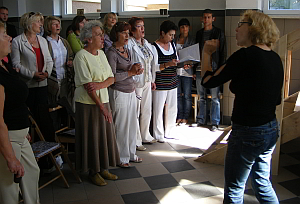
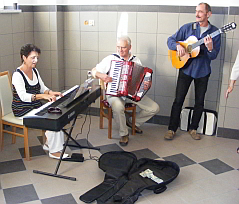
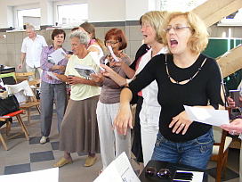
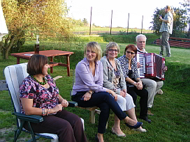

A tymczasem w Cameracie...
.
2011-09-25
Na początek rozśpiewka i zaczynamy. Cztery godziny ciężkiej „śpiewanej pracy” na siedząco i stojąco. Dyrygentka w czasie pracy nic nie odpuszcza, ma być cuuuudnie, równo i bez wpadek. Jak ładnie nie zaśpiewamy, to końca nie będzie.
A potem obiad z grilla przygotowany dla nas przez gospodarzy Małgosię i Marka i już śpiewy na luzie, tańce, przytupy. Utworzyła się nawet orkiestra z naszych chórzystów.
 
Korzystamy też z ostatnich promieni lata, śpiewając w ogrodzie przy akordeonowym akompaniamencie Andrzeja Kłyszewskiego. Andrzej świętuje równocześnie swój tytuł profesorski, więc sto lat od Cameraty odśpiewane jak zwykle na głosy.

No i koniec czas wracać do codziennej rzeczywistości.

© Stowarzyszenie Muzyczne Chór Camerata Wieliczka